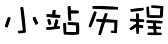

2017年

查看该年大事件>>
08.21
2017
更新手机版首页
用对话让你更了解我
http://zhangweixiang.com/mobile/
01.26
2017
更新电脑版网站首页
用桌面的形式查看更爽啊
http://zhangweixiang.com/
2016年
查看该年大事件>>
07.13
2016
发布领证三年日志
三年如一日
http://blog.zhangweixiang.com/2016/07/13/three-years-marriage-memory/
03.15
2016
修正blog音乐加载错误
听音乐更快了
02.14
2016
发布第一篇新日志
Hi,曦曦
http://blog.zhangweixiang.com/2016/02/14/long-time-no-see-xixi/
01.26
2016
发布BLOG分站
日志从此在这里书写
http://blog.zhangweixiang.com
2015年
查看该年大事件>>
11.07
2015
曦曦页面发布
遥怜小儿女，未解忆长安
http://zhangweixiang.com/private/xixi/index.html
05.26
2015
网站历程页发布
可以查看网站的更新情况
02.12
2015
错误页面导向处理添加
有只可爱的狗狗
http://zhangweixiang.com/404.html
2014年
11.12
2014
页面背景可以根据当前节气切换
知道现在是什么节气啦
11.02
2014
乱码修正
可以查看自己的留言啦
10.31
2014
修正了有阴影的字
10.07
2014
仙剑音乐页面完成
很好听的，欢迎试听下载
http://zhangweixiang.com/private/m/palmusic.html
10.01
2014
求婚页面更新
07.29
2014
结婚：回首七年，历历在目
珍惜当下，迈向远方
http://zhangweixiang.com/private/love/index.html
06.15
2014
网站备案成功，可域名访问
推荐电脑访问，可以留言呦。
http://zhangweixiang.com
05.19
2014
完成测试页面
非常简单，可以统计用户访问数目：
http://zhangweixiang.com/default.aspx
5.15
2014
个人网站申请成功
开始这一段新的旅程